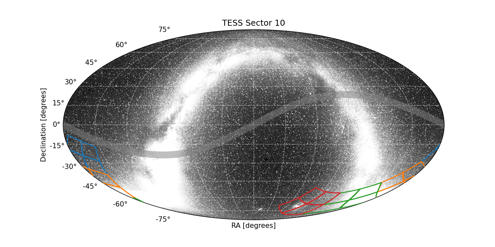

|
 |
Sector 10 Information
For full data release notes see: DRN14, DRN42 (reprocessing). For a list of TIC IDs with noted issues, see this list.
Update: In sector 10, a new linearity model is used in pixel calibration. The differences between new and old linearity model are quite small over the majority of the dynamic range of the CCDs, rising to ∼ 1 − 2% near pixel saturation. This new linearity model will be applied to all sector data from Sector 10 on, and it will be applied to data from Sectors 1-9 when those data are reprocessed.
Sector Summary
Spacecraft Pointing (deg)
| RA | dec | roll | |
|---|---|---|---|
| Spacecraft | 165.05 | -54.82 | 139.17 |
| Camera 1 | 189.9 | -23.89 | 245.67 |
| Camera 2 | 176.16 | -45.14 | 237.72 |
| Camera 3 | 147.7 | -62.89 | 34.26 |
| Camera 4 | 90.0 | -66.56 | 341.28 |
Orbit Summary
| Orbits | Dates (UTC) Start - End |
Cadence # Start - End |
Momentum dumps |
|---|---|---|---|
| 27 | 2019-03-26 - 2019-04-08 | 246223 - 255117 | Every 3.125 days |
| 28 | 2019-04-09 - 2019-04-22 | 255821 - 265122 | Every 3.125 days |
Sector Notes
| Noted Issue | Description |
| Guiding | The use of Camera 1 in attitude control was disabled at the start of both orbits due to strong scattered light signals. Camera 1 guiding was enabled in orbit 27 on 2019-03-28 UTC (Cadence # 247263), and orbit 28 on 2019-04-11 UTC (Cadence # 257233) |
| Spacecraft Pointing | At the start of each orbit, the Earth was close to the boresight of Camera 1, and the level of scattered light was too high for meaningful guide star centroids to be measured. Guiding with Camera 1 was therefore disabled at these times, and attitude control was done using only inputs from Camera 4. When Camera 1 guiding was re-enabled, the spacecraft attitude shifted by a small amount, about 1 arc-second (0.05 pixels). |
| Scattered Light | In Sector 10, the main stray light features are caused by the Earth at the start of each orbit. |
Reprocessing Information: DRN42
During TESS’s primary mission several updates were made to various instrument models, algorithms, and pipeline parameters. Below we list what was updated and applied when reprocessing sectors 1-13. Please see DRN42 for a more comprehensive explanation of each update.
| Update | Description | |
| Instrument models updated: | Electronics model Reference Flux, PRF, and Linearity | |
| Calibration Pipeline Module updates: | The 1D bias estimate is now split into two components, a time-dependent scalar correction and a static row-dependent correction. The first two overclock rows were also removed. The propagation of the uncertainty from the 2D bias model was changed. It is a static term and no longer applied to pixel data. | |
| Pre-Search Data Conditioning Pipeline Module updates: | The parameters to calibrate the PDC goodness metrics were finalized. | |
| Transiting Planet Search Pipeline Module updates: | An initial run of TPS is now used to identify problematic epochs that are assigned “deemphasis weights” in a second and final run of TPS. | |
| Compute Optimal Aperture Pipeline Module updates: | The photometric apertures for stars with Tmag less than 11 were slightly increased. | |
| Photometric Analysis Pipeline Module updates: | The sky background estimate was modified. A scalar offset is now applied that forces the dimmest background-corrected pixels to values near zero, if those pixels were significantly negative. | |
| TESS Input Catalog update: | Targets were reprocessed with version 8 of the TIC. The change affected the apertures assigned to individual targets and the calculations for crowding (CROWDSAP) and flux fraction (FLUXFRAC), and as such the physical properties of TCEs derived from stellar parameters. | |
| Timestamps update: | Timestamps were updated to account for previous drift errors and electronic effects. All data from Sectors 1–36 are now registered to a consistent time system. | |
| New data flags: | All flags are now consistent with those described in DRN30. | |
| Threshold Crossing Event issues: | The planet search of the reprocessed light curves produced a different set of TCEs from the original processed data. There is a high degree of overlap, but not every TCE from previous data releases was recovered. To differentiate between the initial release and this reprocessed data a "pipeline instance number" is included in the filenames of the dv-timeseries, dv-reports, ad dv-result xml files. Larger pin numbers indicate later versions of the software were used to produce the data products. The DR number is also included as a keyword in the export product headers (DATA_REL). | |